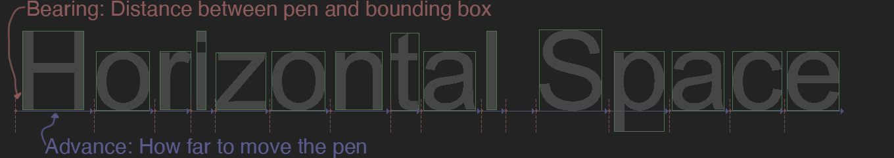

Glyph Layout
The last thing we need to do is lay out text. This section covers how to lay out and render text left to right. For more in depth information on laying out text, check out FreeType Glyph Conventions : III Glyph Metrics.
Glyphs on a line are aligned to what's called the base line. When laying out a string, we keep track of the x and y position. This tracked position is refered to as a pen, or a cursor, or sometimes draw cursor. Each glyph is drawn at the current draw cursor, then the draw cursor is moved.
New tables
We will need to parse three new tables, hhea, hmtx and kern in order to lay out and print a string.
| Table | Why it's needed |
|---|---|
| hhea | Contains ascent, descent, line gap, and the number of horizontal layout metrics |
| hmtx | Contains horizontal layout metrics |
| kern | Contains kerning pairs |
Font::Font(const char* file, bool flip) {
// ... Existing constructor code remains unchanged
u32 hheaTag = ('h' << 24) | ('h' << 16) | ('e' << 8) | 'a';
u32 hmtxTag = ('h' << 24) | ('m' << 16) | ('t' << 8) | 'x';
u32 kernTag = ('k' << 24) | ('e' << 16) | ('r' << 8) | 'n';
u8* hmtx = 0;
u8* hhea = 0;
u8* kern = 0;
tableTag = data + sizeofOffsetTable;
for (u16 table = 0; table < numTables; ++table) {
u32 thisTag = (tableTag[0] << 24) | (tableTag[1] << 16) | (tableTag[2] << 8) | tableTag[3];
u8* pOffset = tableTag + 8;
u32 offset = (pOffset[0] << 24) | (pOffset[1] << 16) | (pOffset[2] << 8) | pOffset[3];
if (thisTag == hmtxTag) {
hmtx = data + offset;
}
else if (thisTag == hheaTag) {
hhea = data + offset;
}
else if (thisTag == kernTag) {
kern = data + offset;
}
tableTag += tableDirectoryStride;
}
// End of constructor unchanged
free(data);
}
Bearing and Advance
Every glyph has a bearing and an advamce. The bearing is the offset of the glyph from it's bounding box. For example, the left side bearing is the distance of the glyph from the left side of its bounding box. The advance is the distance to increment to draw the next letter.
Add a bearing and advance to the Glyph structure.
struct Glyph {
// ... Rest of struct unchanged
f32 bearing; // NEW
f32 advance; // NEW
};
Horizontal layout metrics are stored in the hmtx table. Each element in this table is a pair that contains the advance and left side bearing. The number of elements in the hmtx table is stored in the hhea table, it's the numOfLongHorMetrics element.
After the horizontal metrix, the hmtx table can contain an optional array of left side bearings. If present, the advance for each bearing is the same as the advance of the lsat glyph. To find how many optional bearings there are, subtract the number of metrics from the number of glyphs.
Font::Font(const char* file, bool flip) {
// ... Existing constructor code remains unchanged
p = hhea + 34; // numOfLongHorMetrics is the last entry in hhea
u16 numOfLongHorMetrics = (p[0] << 8) | p[1];
u16 numBearings = numGlyphs - numOfLongHorMetrics;
p = hmtx;
for (u16 i = 0; i < numOfLongHorMetrics; ++i) {
allGlyphs[i].advance = read_u16(&p);
allGlyphs[i].bearing = read_i16(&p);
}
for (u16 i = 0; i < numBearings; ++i) {
allGlyphs[i].bearing = read_i16(&p);
allGlyphs[i].advance = allGlyphs[numOfLongHorMetrics - 1].advance;
}
// End of constructor unchanged
free(data);
}
Line Height
There are three variables used to determine how far to move vertically, ascent, descent and lineGap. Ascent is the distance from the baseline to the highest point of an outline. Descent is the distance from the base line to the lowest point, this number can be negative. Linegap is the ditance between two lines of text.
To get the baseline to base line text distance, subtract descent from ascent and add linegap: space = ascent - descent + lineGap
class Font {
protected:
vector< Glyph > allGlyphs;
unordered_map< u16, u32 > unicodeMap;
i32 ascent; // NEW
i32 descent; // NEW
i32 lineGap; // NEW
// ... Rest of class unchanged,
// add new getter functions at end
public:
inline float GetLineSpace() { // NEW
return ascent - descent + lineGap;
}
};
ascent, descent and lineGap are all stored near the start of the hhea table, after the tables version code.
Font::Font(const char* file, bool flip) {
// ... Existing constructor code remains unchanged
p = hhea + 4; // Skip version
ascent = read_i16(&p);
descent = read_i16(&p);
lineGap = read_i16(&p);
// End of constructor unchanged
free(data);
}
Kerning
Kerning is the space between two letters, non mono-space fonts might have special kerning values for pairs of letters. Font's can store kerning with higher order pairs (like 3+ letters), or even whole words. We're only going to implement simple kerning between two pairs of letters.
We're going to store kerning as a new std::unordered_map. The key is a u32, which is the left and right indices or'd (|) together. The value is the additional space to add to the font spacing.
class Font {
protected:
vector< Glyph > allGlyphs;
unordered_map< u16, u32 > unicodeMap;
unordered_map< u32, f32 > kerning; // NEW
// ... Rest of class unchanged,
// add new getter functions at end
public:
inline f32 GetKern(u16 left, u16 right) { // NEW
left = GetGlyphByCodePoint(left).index;
right = GetGlyphByCodePoint(right).index;
u32 key = ((u32)left << 16) | (u32)right;
if (kerning.find(key) == kerning.end()) {
return 0.0f;
}
return kerning[key];
}
};
Kerning data is stored in the kern table. The kern table starts with a version, and the number of subtables it contains. Skip the version and read the number of kern tables. The ty[e of the kern header can be 16 bit or 32 bit. Only the 16 bit variants are supported by windows, those are the most common types of fonts.
Font::Font(const char* file, bool flip) {
// ... Existing constructor code remains unchanged
p = kern + 2; // "old" kern type with 16 bit version and num tables
u16 numKernTables = read_u16(&p);
Each kern subtable has the same header that contains a version number, the length of the table in bytes and a coverage bitmask. If bit zero in the coverage mask is set, the kern table is horizontal. The last 8 bits of the coverage mask is the format of the subtable, we will only support format 0 which is simple kerning pairs.
for (u16 i = 0; i < numKernTables; ++i) {
u16 version = read_u16(&p);
u16 length = read_u16(&p);
u16 coverage = read_u16(&p);
bool horizontal = (coverage & 1) == 1; // KERN_COVERAGE_BIT
bool replace = (coverage & (1 << 3)) == (1 << 3); // KERN_OVERRIDE_BIT
bool format0 = (coverage >> 8) == 0;// Check coverage bit
if (!horizontal || !format0) { // Skip
p += length - 2 * 3;
continue;
}
The format 0 subtable starts with the number of pairs, followed by three values for doing a fast binary search trough the pairs. After that is the list of kerning pairs, they are stored as the index of the left glyph, the index of the right glyph and the distance between the glyphs.
u16 numKernPairs = read_u16(&p);
p += 6; // Skip search range, entry selector and range shift
for (int j = 0; j < numKernPairs; ++j) {
u16 left = read_u16(&p);
u16 right = read_u16(&p);
i16 value = read_i16(&p);
Generate a key by or-ing together the left and right indices. If the key was not int he dictionary, or the replace flag is set, assign the value. Otherwise, accumulate it.
u32 key = ((u32)left << 16) | (u32)right;
if (!replace && kerning.find(key) != kerning.end()) {
kerning[key] += value;
}
else {
kerning[key] = value;
}
}
}
// End of constructor unchanged
free(data);
}
Point Sizes
A point is a physical unit of measurement, 72 points is one inch. We can convert FUnits to pixels using a scale. This scale is defined as:
float scale = pointSize * resolution / (72 points per inch * units_per_em);
In the above formula point size is the size we want to display glyphs at. Resolution is the size of the buffer we are rendering to. 72ppi is a constant. Units per em represents how many FUnits fit in the em-square. This formula is covered more in depth in the TrueType Reference Manual, it has a range of 64 to 16384.
Let's add a units per em member to the font class, and a convenient get scale function that lets us pass in a point size and dpi and passes back a scale to multiply FUnit's by.
class Font {
protected:
vector< Glyph > allGlyphs;
unordered_map< u16, u32 > unicodeMap;
float unitsPerEm; // NEW
// ... Rest of class unchanged,
// add new getter functions at end
public:
inline float GetUnitsPerEm() { // NEW
return unitsPerEm;
}
inline float GetScale(float pointSize, int screenDPI) { // NEW
return pointSize * float(screenDPI) / (72.0f * unitsPerEm);
}
};
Units per em is stored in the head table, it's the only value we need to read to scale the glyphs.
Font::Font(const char* file, bool flip) {
// ... Existing constructor code remains unchanged
// Parse units per em
p = head + 18; // Skip version, revision, checksum, magic number and flags
unitsPerEm = read_u16(&p);
// End of constructor unchanged
free(data);
}
Drawing a string
Start implementing the draw string function by iterating over every character in the string to print. Keep track of a draw cursor x and y position. If a new line character is encountered, reset the x coordinate of the curstor and increment the y by the font's line spacing. Line spacing is defined in FUnits, it needs to be scaled.
void DrawString(Font& font, i32 x, i32 y, f32 scale, const char* string, u8 r, u8 g, u8 b) {
i32 xPos = x;
i32 yPos = y;
for (u8* iter = (u8*)string; *iter != '\0'; iter++) {
const Glyph& glyph = font.GetGlyphByCodePoint(*iter);
if (*iter == '\n') {
xPos = x;
yPos += font.GetLineSpace() * scale;
continue;
}
The left side bearing of a glyph is it's distance from the draw cursor. It's not going to be added to the cursor, but needs to offset the glyph. If the glyph is flipped, it would sit onthe baseline wrong. To correct for this, we offset any flipped glyph by the height of it's bounding box from the base line
f32 xOffset = glyph.bearing * scale;
f32 yOffset = 0.0f;
if (glyph.IsFlipped()) { // Only need if flipped
yOffset = (glyph.max.y + glyph.min.y) * scale;
}
Call the FillGlyph function to draw the glyph at the current cursor position, then move the draw cursor by the advance of the current glyph. If kerning exists between the current and next characters, apply it to the draw cursor.
FillGlyph(glyph, xPos + xOffset, yPos - yOffset, scale, r, g, b);
xPos += glyph.advance * scale;
f32 kern = 0.0f;
if (*(iter + 1)) {
kern = font.GetKern(*(iter), *(iter + 1));
}
xPos += (i32)(kern * scale);
}
}
We can use the above code to print Hello world in 24 point arial like so:
Font font("arial.ttf");
unsigned int dpi = GetDpiForSystem(); // 96 on windows if not scaled
float scale = font.GetScale(24, dpi);
DrawString(font, 30, 200, scale, "Hello, World!", 0, 255, 0);